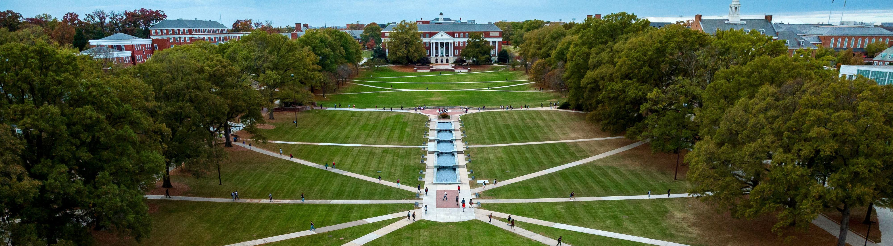
Implementing Our Plan
The implementation of Fearlessly Forward has several key components, including annual priority setting and initiatives, investing in infrastructure and support, community input and engagement, and assessing our progress. Learn more about that work on this page.
Annual Reports
Telling our stories and tracking our progress
Fearlessly Forward
2026 Annual Progress Report
Fearlessly Forward
2025 Annual Progress Report
Fearlessly Forward
2024 Annual Progress Report
Fearlessly Forward
2023 Annual Progress Report
Moving Fearlessly Forward
Together, we developed, launched, and now implement Fearlessly Forward. Our strategic plan emerged from widespread Terp engagement and, after its launch in February, 2022, has become a central and guiding force for all colleges and divisions. The implementation is a simultaneously cyclical and continuous process in which we assess our progress, gather community input and engagement, set priorities and initiatives and invest in needed infrastructure and support.
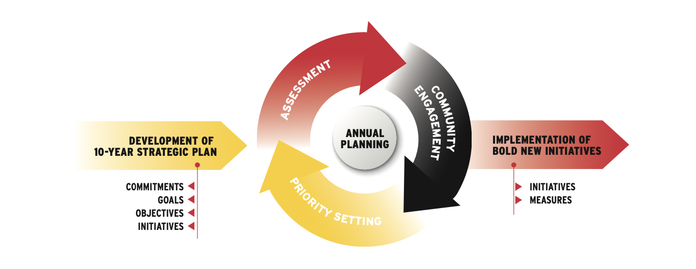
What the University of Maryland does matters, and how we do it matters. The collective work of every member of our community—faculty, students, staff, alumni, and partners—must be empowered and celebrated if we are to realize our ambitious vision.
We have committed ourselves to fearless ideas rooted in our principles of inclusive excellence, driven by innovation and impact, and relentlessly focused on public good and service to humanity. Now is the moment and the University of Maryland is moving fearlessly forward together to forge a better world for humankind.
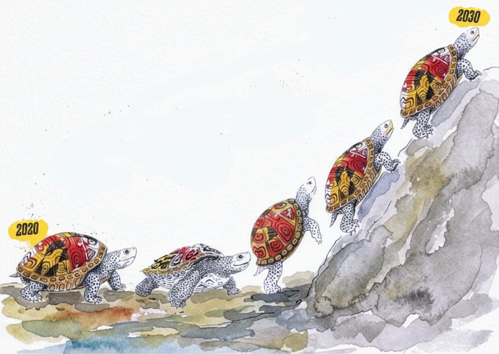
- President's Cabinet retreat
- Annual college planning meetings
- Senate leadership
- Provost's student advisory committees
- Academic Planning Advisory Committee (APAC)
- Signature initiatives
- College and Division programs and activities
- Personnel
- Communications
- Coordination
- Resources
- 2022-2023 Implementation Committees
- Peer review of fearless ideas
- Student, faculty, and staff surveys
- Workgroups and taskforces to launch and steer key initiatives
- Tracking progress through global, strategic commitment, and initiative metrics
- Annual reports
- Presentations to key university constituents (e.g. students, faculty, staff, community)
Our Process
Moving Fearlessly Forward - Implementing Our Strategic Plan Process Document
Our Critical Enablers
Our critical enablers will be keys to the plan's success, and ultimately, to that of the University of Maryland.
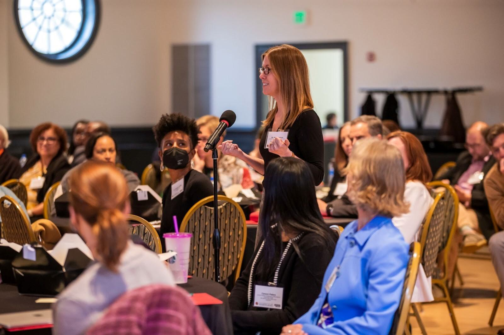
Diverse and Engaged Community
Bringing together diverse voices and identities across our campus and the community inspires collaboration and creativity and accelerates solutions to grand challenges.
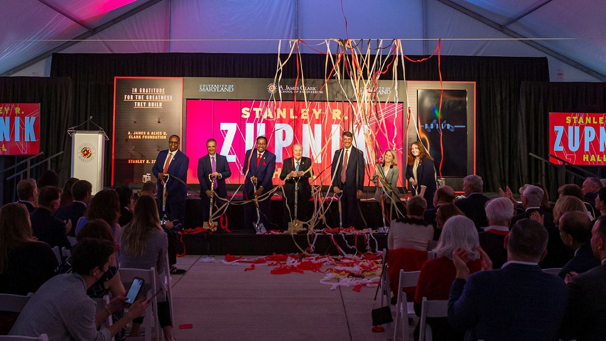
Infrastructure
Investing in state-of-the-art facilities and leading technologies enables us to tackle grand challenges, support world-class learning and research, and promote innovation and excellence in ways that are responsible and sustainable.
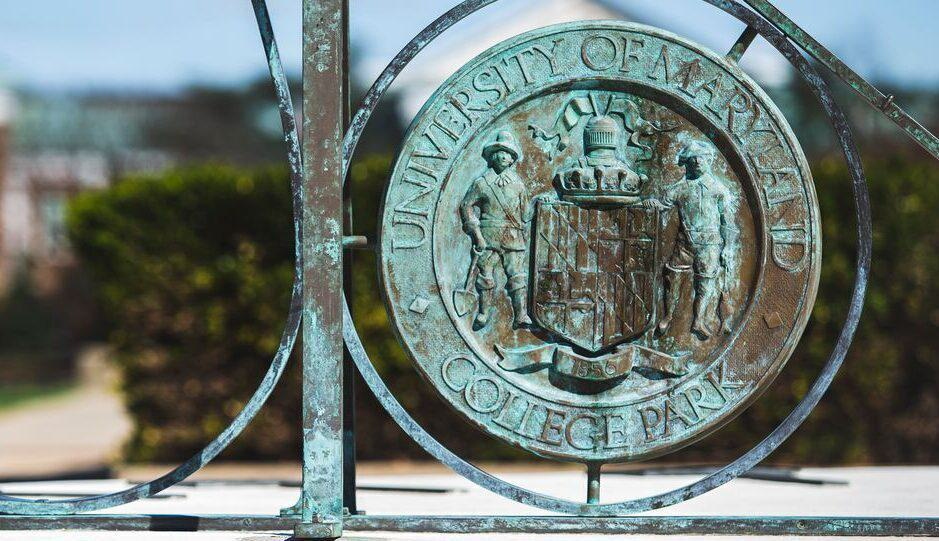
Shared Governance
Engaging all students, faculty, and staff in shaping our future advances, our common purpose, impactful and inclusive research, teaching, and service to humanity.
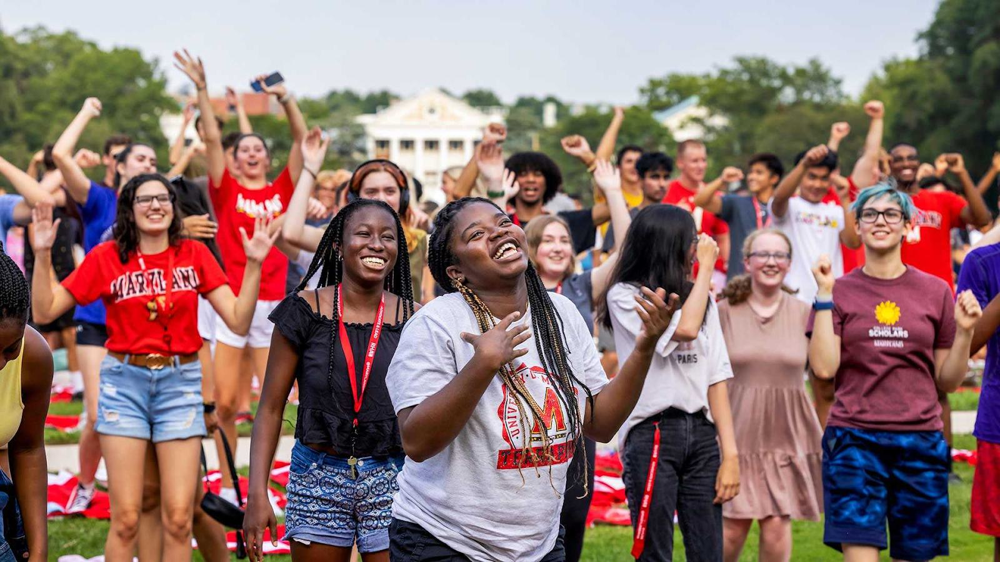
Communications and External Engagement
Sparking dialogue and engagement with alumni and local, state, national, and international partners accelerates and amplifies our real-world impact.
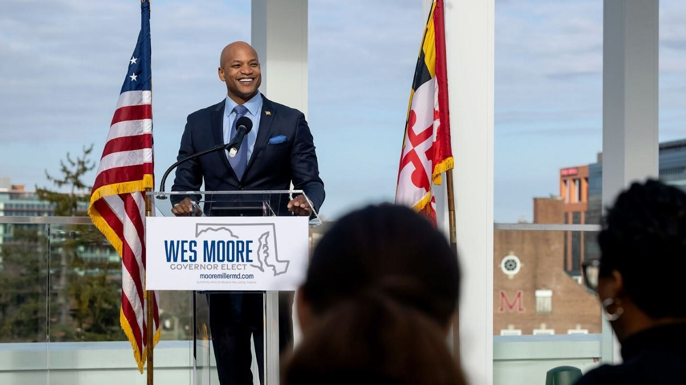
Strategic Location
Leveraging our location positions us to promote civic engagement, address state and federal priorities, and expand partnerships with government agencies, policymakers, research organizations, and private partners.
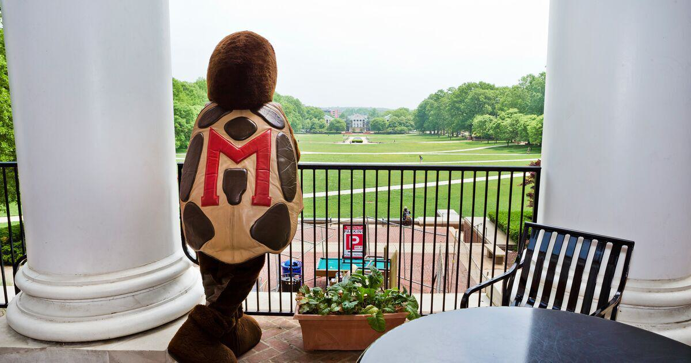
Reward Systems and Incentives
Rewarding and incentivizing behaviors and actions that align with our values increases our capacity to activate creativity, amplify impact, and promote inclusive learning.
Resources
Attracting new resources and promoting effective stewardship of existing resources allows us to invest in high-priority areas that advance our mission and vision.
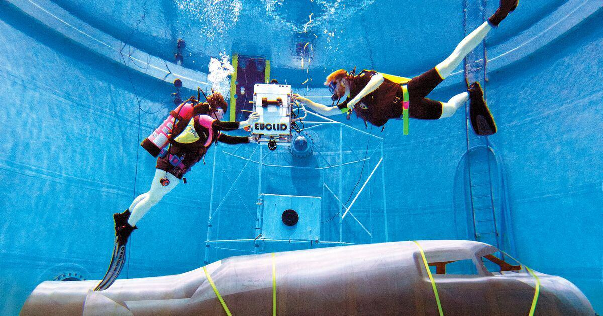
Increased Coordination and Agility
Enhancing internal and external coordination and implementing agile practices position us to further integrate our education and research missions, pursue interdisciplinary collaboration, and expand partnerships.
2022-2023 Strategic Plan Implementation Committees
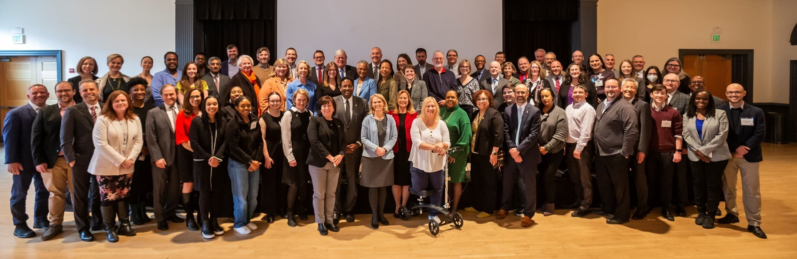
The strategic plan was the result of broad campus participation, fueled by the work of six pillar committees, and made bolder, wiser and more inclusive with open forums and engagement from the community. In continuation of this precedent, all UMD students, faculty and staff were eligible to self-nominate to participate on a strategic plan implementation committee to add critical oversight, feedback and accountability to the implementation process. In the Fall of 2022, Provost Jennifer Rice charged the committees with:
- Providing input to the Provost on critical enablers, campus engagement, and opportunities for synergies and collaborations;
- Advising the Provost on appropriate targets and metrics to assess progress;
- Ensuring we are accountable to achieving goals by reviewing data collected annually by IRPA; and
- Reviewing campus initiatives directly and informally associated with this pillar of the strategic plan, and making recommendations regarding prioritization of initiatives for campus-level support.
Vice President Liaisons:
- Jeff Hollingsworth, Vice President and Chief Information Officer
- Jennifer Rice, Senior Vice President and Provost
- Patty Perillo, Vice President for Student Affairs
Co-Chairs:
- Bill Cohen, Associate Provost and Dean for Undergraduate Studies
- Marcio Oliveira, Assistant Vice President for Academic Technology and Innovation
Committee Members:
- Alan Socha, Associate Director of Assessment for the Office of Institutional Research, Planning, and Assessment
- Ana Palla Kane, Senior IT Accessibility and UX Specialist
- Andrea Goodwin, Assistant Vice President for Student Affairs and Dean of Students
- Anne Baum, Associate Director of the Office of Extended Studies
- Bill Kules, Principal Lecturer for the College of Information Studies and Director of the iConsultancy Experiential Learning Program
- Carmen Bryan, Executive Assistant to the Assistant Vice President for Academic Technology and Innovation
- Christopher Bonner, Associate Professor for the Department of History
- Ebony Terrell Shockley, Executive Director of Teacher Education and Associate Clinical Professor for the Department of Teaching and Learning, Policy and Leadership
- Eliza Thompson, Assistant Clinical Professor for the Department of Hearing and Speech Sciences
- Hilary Gossett, Assistant Director of Academic Facilities
- Jason Farman, Professor for the Department of American Studies and Director of the Design Cultures and Creativity Program
- John Johnson, Strategic Program Manager for the Project Management Center for Excellence
- Jordan Sly, Research and Instruction Librarian and Doctoral Student in the Department of History
- Marie Brodsky, Undergraduate Student in the Department of Mathematics
- Marinel Martinez-Benyarko, Coordinator for Human Resources, Training, and Development for the Stamp Student Union and Doctoral Candidate in Higher Education, Student Affairs, and International Education
- Mary Warneka, Associate Director of Learning Experience
- Michelle Tan, Associate Registrar
- Stephen Roth, Associate Dean of Academic and Faculty Affairs in the School of Public Health and Director of the Department of Public Health Science
Vice President Liaisons:
- Greg Ball, Vice President for Research
- Jennifer Rice, Senior Vice President and Provost
Co-Chairs:
- Betsy Beise, Associate Provost for Academic Planning and Programs
- Eric Chapman, Associate Vice President for Research Development
Committee Members:
- Andy Harris, Professor and Chair for the Department of Astronomy
- Bob Reuning, Associate Vice President and Chief of Facilities Officer
- Doug Roberts, Associate Professor and Associate Dean of Undergraduate Services for the Department of Physics
- Elisabeth Smela, Professor for the Department of Mechanical Engineering
- Jan-Michael Archer, Doctoral Candidate in Environmental Health Sciences
- Jean McGloin, Professor and Associate Dean of Research and Graduate Education in the College of Behavioral and Social Sciences
- Jim Harris, Associate Vice President for University Development
- Jo Richardson, Joel and Kim Feller Endowed Professor and MPower Professor for African-American Studies and Medical Anthropology
- Kimbra Cutlip, Associate Program Director for the College of Agriculture and Natural Resources
- Sara Gavin, Program Director for the Office of Marketing and Communications
- Stephanie Shonekan, Dean of the College of Arts and Humanities
- Suha Hassan, Undergraduate Student in Criminology and Criminal Justice and Public Policy
- Ted Knight, Research Communications and Strategic Partnerships
- Tom Dobrosielski, Manager of Decision Support Systems for the Office of Institutional Research, Planning, and Assessment
Vice President Liaisons:
- Carlo Colella, Vice President for Administration
- Georgina Dodge, Vice President for Diversity and Inclusion
- Patty Perillo, Vice President for Student Affairs
Chair:
- James McShay, Assistant Vice President for Engagement
Committee Members:
- Adrienne Hamcke Wicker, Director of the Center for Leadership and Organizational Change
- Amanda Grimes, Assistant Dean for Finance and Administration for the School of Public Health
- Amy Dwyer D'Agati, Senior Faculty Specialist for the Department of Counseling, Higher Education, and Special Education
- Antonietta Jennings, Administrative Assistant for the Institute for Governmental Service and Research
- Brian Medina, Program Manager of Bias Incident Support Services
- Chantelle Smith, University Honors College Coordinator for Recruitment and Programming
- Cynthia Edmunds, Senior Associate Athletic Director for Diversity, Equity, and Inclusion/Organizational Effectiveness
- Danielle Glazer, Manager of Assessment in the Office of Institutional Research, Planning, and Assessment
- Gunjan Sharma, Graduate Student in the Master of Science in Information Systems Program
- Heidi Scott, Senior Lecturer for the Department of English and Communications Associate for the National Socio-Environmental Synthesis Center
- John Bertot, Professor for the College of Information Studies and Associate Provost for Faculty Affairs
- Kalia Patricio, Assistant Director of Human Resources for the Stamp Student Union
- Megan Gebregziabher, Director and Chief of Staff in the Office of the Provost
- Michael Bruce, Multi Trade Supervisor III
- Niko Reed, Doctoral Student in the Department of Physics
- Rythee Lambert-Jones, Assistant Vice President and Chief of Human Resources Officer
- Shannon Gundy, Director of Undergraduate Admissions
Vice President Liaisons:
- Greg Ball, Vice President for Research
- Carlo Colella, Vice President for Administration
- Matt Hodge, Vice President for University Relations
Chair:
- KerryAnn O'Meara, Special Assistant to the Provost for Strategic Initiatives
Committee Members:
- Carson Peters, Doctoral Student in the School of Public Health, Department of Behavioral and Community Health
- Catherine C. Fisanich, Administrative Specialist for the Department of Chemistry and Biochemistry
- Colin Phillips, Professor of Linguistics and Director of the Maryland Language Science Center
- Courtney Holder, Assistant Director of the Stamp Student Union Leadership and Community Service-Learning Department
- Darren Jarboe, Principal Agent and Assistant Director of the University of Maryland Extension Agriculture and Food Systems
- Dean Chang, Associate Vice President for Innovation and Economic Development
- Eric Reinke, Associate Athletic Director for Business Operations
- Urszula Cieslak, Undergraduate Student in the Robert H. Smith School of Business
- Gloria Aparicio Blackwell, Founder and Director of Community Engagement for the Office of Community Engagement
- Jeanette Snider, Assistant Research Professor with the Social Justice Alliance and Anti-Black Racism Initiative and Adjunct Professor at the Robert H. Smith School of Business
- John Sawyer, Director of Strategic Research Initiatives
- Julie Silva, Professor for the Department of Geographical Sciences
- Kathleen Perry, Assistant to the Provost
- Ken Ulman, Chief Strategy Officer for Economic Development for the University of Maryland College Park Foundation and President of Terrapin Development Company
- Lance Beasley, Coordinator of Reporting for the Office of Institutional Research, Planning, and Assessment
- Lena Morreale Scott, Director of the Civic Education and Engagement Initiative, Office of the Dean, College of Education
- Martina Grunwald, Executive Director of Development for University Relations
- Nicholas Orban, Special Assistant to the Associate Vice President for Enrollment Management
- Rashawn Ray, Professor for the Department of Sociology and Executive Director of the Lab for Applied Social Science Research
- Ross Stern, Executive Director for Government Relations
Moving Fearlessly Forward Together
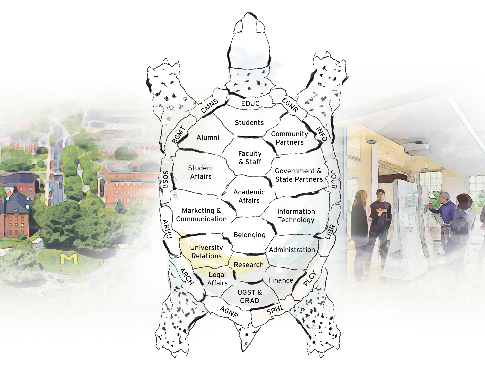
FEARLESSLY FORWARD IN PURSUIT OF EXCELLENCE AND IMPACT FOR THE PUBLIC GOOD: THE UNIVERSITY OF MARYLAND STRATEGIC PLAN is a living document and will evolve and grow as we do. Please visit this site to follow our progress as we move fearlessly forward.